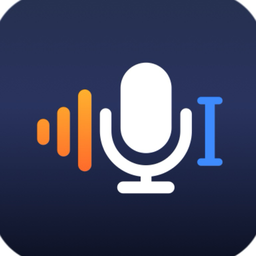

KVoice for Mac
- Hold a shortcut, speak: text lands in any app
- 13 AI actions: Clean Up, Email Draft, Translate…
- Whisper, Parakeet and more, all local
RecordingClean Up⌘1
Release to stop0:07
Dictation for Mac and iPhone
Talk naturally. KVoice types it at your cursor, transcribed on your device.
So the design review, let's move it to Friday morning, and send the slides to the team before then.
Hi team,
The design review is moving to Friday morning. Please send the slides to the team before then.
Thanks,
设计评审改到周五上午，在那之前把幻灯片发给团队。
Two apps
A menu-bar dictation app for Mac. A voice keyboard for iPhone.

Under half a minute
A real recording: dictation, AI actions and a terminal.
Optional AI
Off by default. Use Apple Intelligence on your device, or a service you choose.
Drops the ums and false starts
Turns a ramble into an email
Pulls out the action items
Puts it in another language
At a glance
| KVoice for Mac | KVoice for iPhone | |
|---|---|---|
| Start | Hold a shortcut | Keyboard, Action Button, Control Center, Siri |
| Speech recognition | Whisper, Parakeet and more, on device | Apple Speech or Whisper; cloud optional |
| Get it | Homebrew or DMG; App Store edition coming | TestFlight public beta |
Privacy
No servers, no accounts, no tracking.
FAQ
Yes, and open source (MIT), with no subscriptions or in-app purchases. A paid AI service you connect may charge you.
No. Once a speech model is downloaded, dictation works offline. Only online services you choose need the network.
About a hundred with Whisper. The app interface is English and Simplified Chinese on Mac, English on iPhone for now.
Free, open source, and it runs on your device.
brew install --cask kccarlos/tap/kvoice